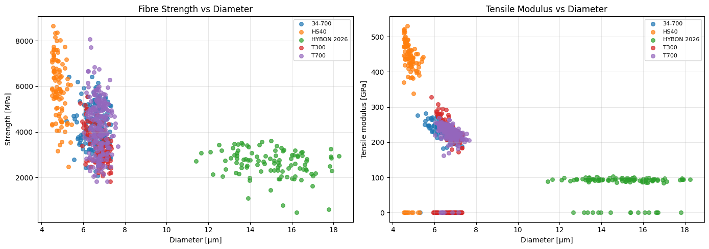
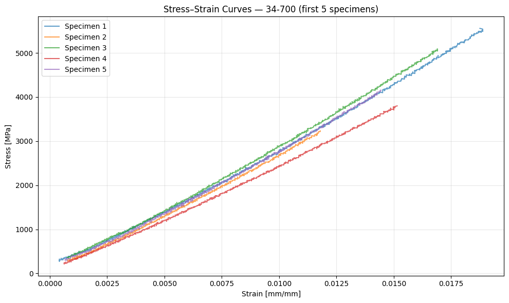
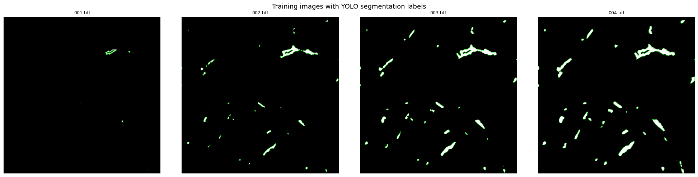
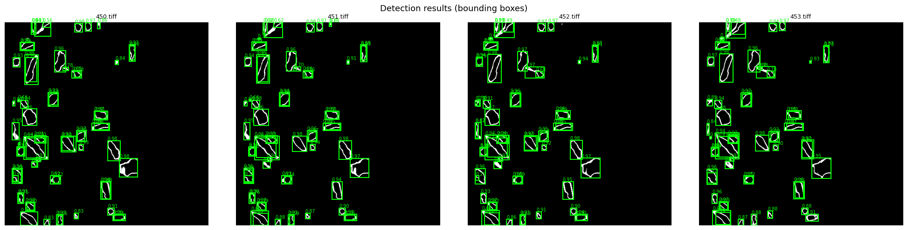
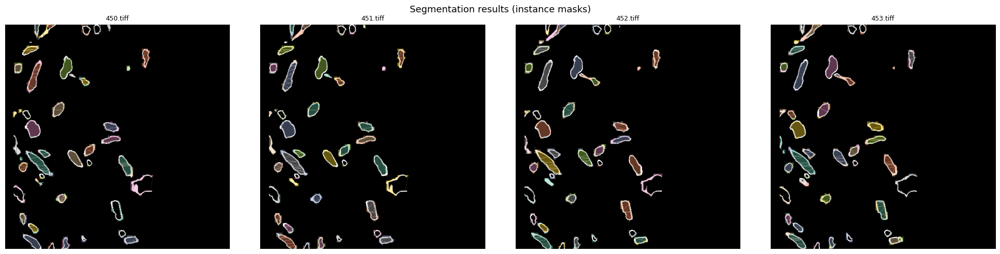
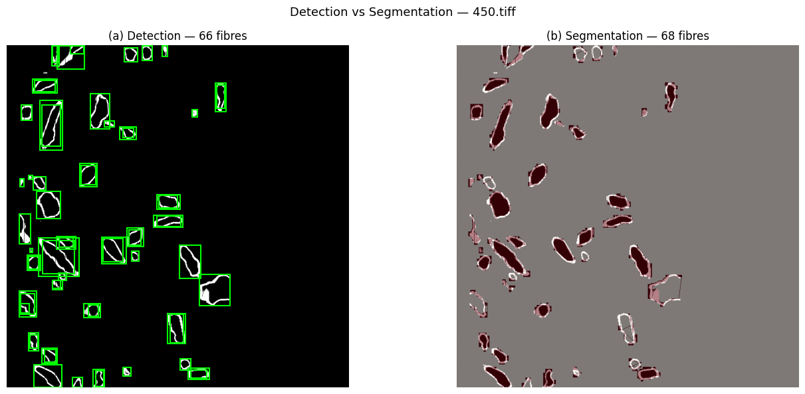

YOLO on Glass Fibre Dataset¶
This notebook sets up two YOLO workflows on the glass-fibre tomography data:
(a) Object Detection — bounding-box detection of fibres
(b) Instance Segmentation — pixel-level fibre masks
It also loads and visualises the mechanical-test data from glass-fibre/.
0 — Imports & paths¶
import os
import glob
import numpy as np
import pandas as pd
import matplotlib.pyplot as plt
from skimage import io
import cv2
from pathlib import Path
import tempfile
from ultralytics import YOLO
miopen_dir = tempfile.mkdtemp(prefix="miopen-", dir="/tmp")
os.environ["MIOPEN_USER_DB_PATH"] = miopen_dir
os.environ["MIOPEN_CUSTOM_CACHE_DIR"] = miopen_dir
%matplotlib inline
plt.rcParams['figure.figsize'] = (12, 8)
plt.rcParams['figure.dpi'] = 100
# ── project paths ──────────────────────────────────────────────
PROJECT_ROOT = Path('/pfs/lustrep4/projappl/project_465002387/DEEP_Inspection_Material_Science/YOLO_1001') # ai-tomo root
GLASS_FIBRE = PROJECT_ROOT / 'glass-fibre' # mechanical data
DATA_DIR = PROJECT_ROOT / 'glass-fibres' # YOLO images+labels
TRAIN_DIR = DATA_DIR / 'train'
VAL_DIR = DATA_DIR / 'val'
print(f'Glass-fibre sub-dirs : {sorted([d.name for d in GLASS_FIBRE.iterdir() if d.is_dir()])}')
print(f'Train images : {len(list(TRAIN_DIR.glob("*.tiff")))}')
print(f'Val images : {len(list(VAL_DIR.glob("*.tiff")))}')
Glass-fibre sub-dirs : ['34-700', 'HS40', 'HYBON 2026', 'T300', 'T700']
Train images : 501
Val images : 51
1 — Explore the Glass-Fibre Mechanical Data¶
# Load analysed data for every fibre type
fibre_types = sorted([d.name for d in GLASS_FIBRE.iterdir() if d.is_dir()])
analysed = {}
for ft in fibre_types:
dat_file = list((GLASS_FIBRE / ft).glob('*analysed_data.dat'))[0]
df = pd.read_csv(dat_file, skipinitialspace=True)
df['Fibre Type'] = ft
analysed[ft] = df
df_all = pd.concat(analysed.values(), ignore_index=True)
print(f'Total specimens: {len(df_all)}')
df_all.head()
Total specimens: 695
| Specimen Index | Diameter [um] | Gauge length [mm] | Load drops [1/0] | Strength [MPa] | Tensile modulus [GPa] | Stiffening rate [GPa/%] | Initial tensile modulus [GPa] | Unnamed: 8 | Fibre Type | |
|---|---|---|---|---|---|---|---|---|---|---|
| 0 | 1.0 | 6.21 | 12.271 | 0.0 | 5556.624306 | 254.383775 | 53.464995 | 234.643214 | NaN | 34-700 |
| 1 | 2.0 | 6.37 | 12.317 | 0.0 | 3231.978616 | 250.637551 | 65.247520 | 227.049590 | NaN | 34-700 |
| 2 | 3.0 | 6.42 | 12.299 | 0.0 | 5090.931692 | 256.493143 | 60.221147 | 240.109241 | NaN | 34-700 |
| 3 | 4.0 | 7.00 | 12.244 | 0.0 | 3798.931050 | 227.036568 | 41.291388 | 214.271020 | NaN | 34-700 |
| 4 | 5.0 | 6.19 | 12.227 | 0.0 | 4157.058444 | 254.179755 | 66.730266 | 229.589812 | NaN | 34-700 |
# Compare fibre types: Strength & Tensile Modulus
fig, axes = plt.subplots(1, 2, figsize=(14, 5))
for ft in fibre_types:
sub = df_all[df_all['Fibre Type'] == ft]
axes[0].scatter(sub['Diameter [um]'], sub['Strength [MPa]'], label=ft, alpha=0.7, s=30)
axes[1].scatter(sub['Diameter [um]'], sub['Tensile modulus [GPa]'], label=ft, alpha=0.7, s=30)
axes[0].set(xlabel='Diameter [µm]', ylabel='Strength [MPa]', title='Fibre Strength vs Diameter')
axes[1].set(xlabel='Diameter [µm]', ylabel='Tensile modulus [GPa]', title='Tensile Modulus vs Diameter')
for ax in axes:
ax.legend(fontsize=8)
ax.grid(True, alpha=0.3)
plt.tight_layout()
plt.show()

# Load and plot stress-strain curves for one fibre type
ft_example = fibre_types[0]
ss_file = list((GLASS_FIBRE / ft_example).glob('*stress_strain.dat'))[0]
df_ss = pd.read_csv(ss_file, skipinitialspace=True)
# First column is empty due to leading comma — drop it
df_ss = df_ss.iloc[:, 1:]
df_ss.columns = [c.strip() for c in df_ss.columns]
fig, ax = plt.subplots(figsize=(10, 6))
for idx in df_ss['Specimen Index'].unique()[:5]:
sub = df_ss[df_ss['Specimen Index'] == idx]
ax.plot(sub['Strain [mm/mm]'], sub['Stress [MPa]'], label=f'Specimen {int(idx)}', alpha=0.7)
ax.set(xlabel='Strain [mm/mm]', ylabel='Stress [MPa]',
title=f'Stress–Strain Curves — {ft_example} (first 5 specimens)')
ax.legend()
ax.grid(True, alpha=0.3)
plt.tight_layout()
plt.show()

2 — Inspect the Tomography Image Dataset¶
# Show a few training images with their YOLO labels overlaid
train_images = sorted(TRAIN_DIR.glob('*.tiff'))[:4]
fig, axes = plt.subplots(1, len(train_images), figsize=(5 * len(train_images), 5))
if len(train_images) == 1:
axes = [axes]
for ax, img_path in zip(axes, train_images):
img = io.imread(img_path)
if img.ndim == 3 and img.shape[0] == 3:
img = np.transpose(img, (1, 2, 0)) # CHW → HWC
ax.imshow(img, cmap='gray')
# Overlay YOLO polygon labels if present
label_path = img_path.with_suffix('.txt')
if label_path.exists():
H = img.shape[0] if img.ndim == 2 else img.shape[0]
W = img.shape[1] if img.ndim == 2 else img.shape[1]
with open(label_path) as f:
for line in f:
parts = line.strip().split()
if len(parts) < 5:
continue
coords = np.array([float(v) for v in parts[1:]]).reshape(-1, 2)
coords[:, 0] *= W
coords[:, 1] *= H
poly = plt.Polygon(coords, fill=False, edgecolor='lime', linewidth=0.5)
ax.add_patch(poly)
ax.set_title(img_path.name, fontsize=9)
ax.axis('off')
plt.suptitle('Training images with YOLO segmentation labels', fontsize=13)
plt.tight_layout()
plt.show()

3 — Dataset YAML Configuration¶
import yaml
# ── Detection config ───────────────────────────────────────────
det_yaml = {
'path': str(DATA_DIR.resolve()),
'train': 'train',
'val': 'val',
'names': {0: 'fiber'},
}
det_yaml_path = PROJECT_ROOT / 'glass-fibre-detect.yaml'
with open(det_yaml_path, 'w') as f:
yaml.dump(det_yaml, f, default_flow_style=False)
# ── Segmentation config (same data, YOLO uses polygon labels) ─
seg_yaml_path = PROJECT_ROOT / 'glass-fibre-segment.yaml'
with open(seg_yaml_path, 'w') as f:
yaml.dump(det_yaml, f, default_flow_style=False) # same content; the task flag decides detect vs segment
print('Detection YAML :', det_yaml_path)
print('Segmentation YAML:', seg_yaml_path)
print()
print(yaml.dump(det_yaml, default_flow_style=False))
Detection YAML : /pfs/lustrep4/projappl/project_465002387/DEEP_Inspection_Material_Science/YOLO_1001/glass-fibre-detect.yaml
Segmentation YAML: /pfs/lustrep4/projappl/project_465002387/DEEP_Inspection_Material_Science/YOLO_1001/glass-fibre-segment.yaml
names:
0: fiber
path: /pfs/lustrep4/projappl/project_465002387/DEEP_Inspection_Material_Science/YOLO_1001/glass-fibres
train: train
val: val
4(a) — YOLO Object Detection (bounding boxes)¶
Uses yolo11n.pt (a detection-only pretrained model).
YOLO automatically converts polygon labels to bounding boxes when the task is detect.
# Load the detection model
det_model = YOLO('yolo11n.pt') # pretrained COCO detection weights
print(det_model.info())
YOLO11n summary: 181 layers, 2,624,080 parameters, 0 gradients, 6.6 GFLOPs
(181, 2624080, 0, 6.614336)
# ── Train detection ────────────────────────────────────────────
# Adjust epochs, imgsz, batch as needed.
# Set device='cpu' if no GPU is available.
det_results = det_model.train(
data = str(det_yaml_path),
epochs = 30,
imgsz = 640,
batch = 16,
name = 'glass-fibre-detect',
project = 'runs',
patience = 10,
pretrained = True,
verbose = True,
)
New https://pypi.org/project/ultralytics/8.4.170 available 😃 Update with 'pip install -U ultralytics'
Ultralytics 8.4.7 🚀 Python-3.12.3 torch-2.9.1+rocm6.4 CUDA:0 (AMD Instinct MI250X, 65520MiB)
engine/trainer: agnostic_nms=False, amp=True, angle=1.0, augment=False, auto_augment=randaugment, batch=16, bgr=0.0, box=7.5, cache=False, cfg=None, classes=None, close_mosaic=10, cls=0.5, compile=False, conf=None, copy_paste=0.0, copy_paste_mode=flip, cos_lr=False, cutmix=0.0, data=/pfs/lustrep4/projappl/project_465002387/DEEP_Inspection_Material_Science/YOLO_1001/glass-fibre-detect.yaml, degrees=0.0, deterministic=True, device=None, dfl=1.5, dnn=False, dropout=0.0, dynamic=False, embed=None, epochs=30, erasing=0.4, exist_ok=False, fliplr=0.5, flipud=0.0, format=torchscript, fraction=1.0, freeze=None, half=False, hsv_h=0.015, hsv_s=0.7, hsv_v=0.4, imgsz=640, int8=False, iou=0.7, keras=False, kobj=1.0, line_width=None, lr0=0.01, lrf=0.01, mask_ratio=4, max_det=300, mixup=0.0, mode=train, model=yolo11n.pt, momentum=0.937, mosaic=1.0, multi_scale=0.0, name=glass-fibre-detect4, nbs=64, nms=False, opset=None, optimize=False, optimizer=auto, overlap_mask=True, patience=10, perspective=0.0, plots=True, pose=12.0, pretrained=True, profile=False, project=runs, rect=False, resume=False, retina_masks=False, rle=1.0, save=True, save_conf=False, save_crop=False, save_dir=/pfs/lustrep4/users/xieruiwe/YOLO_1001_test/runs/detect/runs/glass-fibre-detect4, save_frames=False, save_json=False, save_period=-1, save_txt=False, scale=0.5, seed=0, shear=0.0, show=False, show_boxes=True, show_conf=True, show_labels=True, simplify=True, single_cls=False, source=None, split=val, stream_buffer=False, task=detect, time=None, tracker=botsort.yaml, translate=0.1, val=True, verbose=True, vid_stride=1, visualize=False, warmup_bias_lr=0.1, warmup_epochs=3.0, warmup_momentum=0.8, weight_decay=0.0005, workers=8, workspace=None
Overriding model.yaml nc=80 with nc=1
from n params module arguments
0 -1 1 464 ultralytics.nn.modules.conv.Conv [3, 16, 3, 2]
1 -1 1 4672 ultralytics.nn.modules.conv.Conv [16, 32, 3, 2]
2 -1 1 6640 ultralytics.nn.modules.block.C3k2 [32, 64, 1, False, 0.25]
3 -1 1 36992 ultralytics.nn.modules.conv.Conv [64, 64, 3, 2]
4 -1 1 26080 ultralytics.nn.modules.block.C3k2 [64, 128, 1, False, 0.25]
5 -1 1 147712 ultralytics.nn.modules.conv.Conv [128, 128, 3, 2]
6 -1 1 87040 ultralytics.nn.modules.block.C3k2 [128, 128, 1, True]
7 -1 1 295424 ultralytics.nn.modules.conv.Conv [128, 256, 3, 2]
8 -1 1 346112 ultralytics.nn.modules.block.C3k2 [256, 256, 1, True]
9 -1 1 164608 ultralytics.nn.modules.block.SPPF [256, 256, 5]
10 -1 1 249728 ultralytics.nn.modules.block.C2PSA [256, 256, 1]
11 -1 1 0 torch.nn.modules.upsampling.Upsample [None, 2, 'nearest']
12 [-1, 6] 1 0 ultralytics.nn.modules.conv.Concat [1]
13 -1 1 111296 ultralytics.nn.modules.block.C3k2 [384, 128, 1, False]
14 -1 1 0 torch.nn.modules.upsampling.Upsample [None, 2, 'nearest']
15 [-1, 4] 1 0 ultralytics.nn.modules.conv.Concat [1]
16 -1 1 32096 ultralytics.nn.modules.block.C3k2 [256, 64, 1, False]
17 -1 1 36992 ultralytics.nn.modules.conv.Conv [64, 64, 3, 2]
18 [-1, 13] 1 0 ultralytics.nn.modules.conv.Concat [1]
19 -1 1 86720 ultralytics.nn.modules.block.C3k2 [192, 128, 1, False]
20 -1 1 147712 ultralytics.nn.modules.conv.Conv [128, 128, 3, 2]
21 [-1, 10] 1 0 ultralytics.nn.modules.conv.Concat [1]
22 -1 1 378880 ultralytics.nn.modules.block.C3k2 [384, 256, 1, True]
23 [16, 19, 22] 1 430867 ultralytics.nn.modules.head.Detect [1, 16, None, [64, 128, 256]]
YOLO11n summary: 182 layers, 2,590,035 parameters, 2,590,019 gradients, 6.4 GFLOPs
Transferred 448/499 items from pretrained weights
Freezing layer 'model.23.dfl.conv.weight'
AMP: running Automatic Mixed Precision (AMP) checks...
AMP: checks passed ✅
train: Fast image access ✅ (ping: 0.4±0.1 ms, read: 77.1±53.5 MB/s, size: 2935.8 KB)
train: Scanning /pfs/lustrep4/projappl/project_465002387/DEEP_Inspection_Material_Science/YOLO_1001/glass-fibres/train.cache... 501 images, 0 backgrounds, 0 corrupt: 100% ━━━━━━━━━━━━ 501/501 105.1Mit/s 0.0s
val: Fast image access ✅ (ping: 0.3±0.0 ms, read: 45.3±61.4 MB/s, size: 2935.8 KB)
val: Scanning /pfs/lustrep4/projappl/project_465002387/DEEP_Inspection_Material_Science/YOLO_1001/glass-fibres/val.cache... 51 images, 0 backgrounds, 0 corrupt: 100% ━━━━━━━━━━━━ 51/51 3.1Mit/s 0.0s
Plotting labels to /pfs/lustrep4/users/xieruiwe/YOLO_1001_test/runs/detect/runs/glass-fibre-detect4/labels.jpg...
optimizer: 'optimizer=auto' found, ignoring 'lr0=0.01' and 'momentum=0.937' and determining best 'optimizer', 'lr0' and 'momentum' automatically...
optimizer: MuSGD(lr=0.002, momentum=0.9) with parameter groups 81 weight(decay=0.0), 88 weight(decay=0.0005), 87 bias(decay=0.0)
Image sizes 640 train, 640 val
Using 8 dataloader workers
Logging results to /pfs/lustrep4/users/xieruiwe/YOLO_1001_test/runs/detect/runs/glass-fibre-detect4
Starting training for 30 epochs...
Epoch GPU_mem box_loss cls_loss dfl_loss Instances Size
1/30 0.393G 1.149 3.051 1.087 644 640: 100% ━━━━━━━━━━━━ 32/32 2.4s/it 1:160.5sss
Class Images Instances Box(P R mAP50 mAP50-95): 100% ━━━━━━━━━━━━ 2/2 2.6s/it 5.3s<10.7s
all 51 4089 0.0882 0.33 0.0814 0.0546
Epoch GPU_mem box_loss cls_loss dfl_loss Instances Size
2/30 4.74G 0.9549 1.773 0.9981 499 640: 100% ━━━━━━━━━━━━ 32/32 2.1it/s 15.2s0.3s
Class Images Instances Box(P R mAP50 mAP50-95): 100% ━━━━━━━━━━━━ 2/2 2.3it/s 0.9s1.8s
all 51 4089 0.967 0.272 0.434 0.274
Epoch GPU_mem box_loss cls_loss dfl_loss Instances Size
3/30 5.32G 0.8817 0.966 0.968 330 640: 100% ━━━━━━━━━━━━ 32/32 2.3it/s 13.9s0.4s
Class Images Instances Box(P R mAP50 mAP50-95): 100% ━━━━━━━━━━━━ 2/2 3.2it/s 0.6s1.6s
all 51 4089 0.832 0.412 0.509 0.328
Epoch GPU_mem box_loss cls_loss dfl_loss Instances Size
4/30 5.96G 0.8476 0.8046 0.9304 544 640: 100% ━━━━━━━━━━━━ 32/32 1.1it/s 28.1s0.3s
Class Images Instances Box(P R mAP50 mAP50-95): 100% ━━━━━━━━━━━━ 2/2 2.5it/s 0.8s1.9s
all 51 4089 0.743 0.529 0.582 0.362
Epoch GPU_mem box_loss cls_loss dfl_loss Instances Size
5/30 5.96G 0.8104 0.7361 0.9134 441 640: 100% ━━━━━━━━━━━━ 32/32 1.2it/s 25.6s0.5s
Class Images Instances Box(P R mAP50 mAP50-95): 100% ━━━━━━━━━━━━ 2/2 2.0it/s 1.0s1.7s
all 51 4089 0.766 0.501 0.554 0.36
Epoch GPU_mem box_loss cls_loss dfl_loss Instances Size
6/30 5.96G 0.7725 0.6877 0.8999 513 640: 100% ━━━━━━━━━━━━ 32/32 1.5it/s 20.8s0.4s
Class Images Instances Box(P R mAP50 mAP50-95): 100% ━━━━━━━━━━━━ 2/2 2.2it/s 0.9s1.8s
all 51 4089 0.804 0.482 0.535 0.352
Epoch GPU_mem box_loss cls_loss dfl_loss Instances Size
7/30 5.96G 0.7466 0.6635 0.8918 527 640: 100% ━━━━━━━━━━━━ 32/32 1.5it/s 21.1s0.5s
Class Images Instances Box(P R mAP50 mAP50-95): 100% ━━━━━━━━━━━━ 2/2 2.2it/s 0.9s2.0s
all 51 4089 0.827 0.476 0.538 0.351
Epoch GPU_mem box_loss cls_loss dfl_loss Instances Size
8/30 5.97G 0.7 0.6285 0.8787 371 640: 100% ━━━━━━━━━━━━ 32/32 1.6it/s 20.3s0.5s
Class Images Instances Box(P R mAP50 mAP50-95): 100% ━━━━━━━━━━━━ 2/2 1.6it/s 1.2s1.9s
all 51 4089 0.819 0.493 0.552 0.37
Epoch GPU_mem box_loss cls_loss dfl_loss Instances Size
9/30 5.98G 0.6902 0.6091 0.8697 375 640: 100% ━━━━━━━━━━━━ 32/32 1.5it/s 21.0s0.5s
Class Images Instances Box(P R mAP50 mAP50-95): 100% ━━━━━━━━━━━━ 2/2 1.7it/s 1.1s2.4s
all 51 4089 0.812 0.503 0.555 0.365
Epoch GPU_mem box_loss cls_loss dfl_loss Instances Size
10/30 6G 0.6677 0.5864 0.8635 399 640: 100% ━━━━━━━━━━━━ 32/32 1.6it/s 20.0s0.5s
Class Images Instances Box(P R mAP50 mAP50-95): 100% ━━━━━━━━━━━━ 2/2 1.6it/s 1.2s2.5s
all 51 4089 0.849 0.497 0.557 0.364
Epoch GPU_mem box_loss cls_loss dfl_loss Instances Size
11/30 6G 0.6517 0.5759 0.8602 369 640: 100% ━━━━━━━━━━━━ 32/32 1.8it/s 18.1s0.5s
Class Images Instances Box(P R mAP50 mAP50-95): 100% ━━━━━━━━━━━━ 2/2 1.7it/s 1.2s2.3s
all 51 4089 0.851 0.508 0.566 0.373
Epoch GPU_mem box_loss cls_loss dfl_loss Instances Size
12/30 6.64G 0.6366 0.5567 0.8584 404 640: 100% ━━━━━━━━━━━━ 32/32 1.7it/s 19.2s0.5s
Class Images Instances Box(P R mAP50 mAP50-95): 100% ━━━━━━━━━━━━ 2/2 3.7it/s 0.5s1.1s
all 51 4089 0.857 0.517 0.573 0.383
Epoch GPU_mem box_loss cls_loss dfl_loss Instances Size
13/30 6.64G 0.629 0.5409 0.8535 671 640: 100% ━━━━━━━━━━━━ 32/32 1.5it/s 21.3s0.5ss
Class Images Instances Box(P R mAP50 mAP50-95): 100% ━━━━━━━━━━━━ 2/2 2.1it/s 1.0s2.1s
all 51 4089 0.864 0.51 0.567 0.373
Epoch GPU_mem box_loss cls_loss dfl_loss Instances Size
14/30 6.64G 0.6149 0.5285 0.8501 444 640: 100% ━━━━━━━━━━━━ 32/32 1.3it/s 24.5s0.6ss
Class Images Instances Box(P R mAP50 mAP50-95): 100% ━━━━━━━━━━━━ 2/2 2.0it/s 1.0s1.9s
all 51 4089 0.868 0.519 0.577 0.385
Epoch GPU_mem box_loss cls_loss dfl_loss Instances Size
15/30 6.64G 0.6081 0.5259 0.8474 690 640: 100% ━━━━━━━━━━━━ 32/32 2.0it/s 16.0s0.4s
Class Images Instances Box(P R mAP50 mAP50-95): 100% ━━━━━━━━━━━━ 2/2 1.9it/s 1.0s2.2s
all 51 4089 0.874 0.52 0.576 0.383
Epoch GPU_mem box_loss cls_loss dfl_loss Instances Size
16/30 6.64G 0.5985 0.5126 0.844 625 640: 100% ━━━━━━━━━━━━ 32/32 1.4it/s 22.8s0.6ss
Class Images Instances Box(P R mAP50 mAP50-95): 100% ━━━━━━━━━━━━ 2/2 2.6it/s 0.8s1.6s
all 51 4089 0.873 0.529 0.583 0.392
Epoch GPU_mem box_loss cls_loss dfl_loss Instances Size
17/30 7.33G 0.5886 0.5068 0.8445 383 640: 100% ━━━━━━━━━━━━ 32/32 1.4it/s 22.7s0.6s
Class Images Instances Box(P R mAP50 mAP50-95): 100% ━━━━━━━━━━━━ 2/2 3.1it/s 0.7s1.3s
all 51 4089 0.873 0.517 0.571 0.374
Epoch GPU_mem box_loss cls_loss dfl_loss Instances Size
18/30 7.33G 0.5727 0.4981 0.8413 406 640: 100% ━━━━━━━━━━━━ 32/32 1.5it/s 21.5s0.5s
Class Images Instances Box(P R mAP50 mAP50-95): 100% ━━━━━━━━━━━━ 2/2 2.5it/s 0.8s1.8s
all 51 4089 0.877 0.518 0.574 0.374
Epoch GPU_mem box_loss cls_loss dfl_loss Instances Size
19/30 7.33G 0.5764 0.4913 0.8399 536 640: 100% ━━━━━━━━━━━━ 32/32 1.3it/s 24.9s0.5s
Class Images Instances Box(P R mAP50 mAP50-95): 100% ━━━━━━━━━━━━ 2/2 2.8it/s 0.7s1.4s
all 51 4089 0.874 0.527 0.577 0.383
Epoch GPU_mem box_loss cls_loss dfl_loss Instances Size
20/30 7.33G 0.5729 0.4861 0.8413 472 640: 100% ━━━━━━━━━━━━ 32/32 1.3it/s 24.7s0.6ss
Class Images Instances Box(P R mAP50 mAP50-95): 100% ━━━━━━━━━━━━ 2/2 2.1it/s 0.9s1.5s
all 51 4089 0.87 0.524 0.577 0.383
Closing dataloader mosaic
Epoch GPU_mem box_loss cls_loss dfl_loss Instances Size
21/30 7.33G 0.5346 0.5203 0.8367 368 640: 100% ━━━━━━━━━━━━ 32/32 4.1it/s 7.8s0.2s
Class Images Instances Box(P R mAP50 mAP50-95): 100% ━━━━━━━━━━━━ 2/2 7.5it/s 0.3s0.6s
all 51 4089 0.879 0.53 0.574 0.382
Epoch GPU_mem box_loss cls_loss dfl_loss Instances Size
22/30 7.33G 0.5311 0.4954 0.8284 316 640: 100% ━━━━━━━━━━━━ 32/32 5.2it/s 6.2s0.2s
Class Images Instances Box(P R mAP50 mAP50-95): 100% ━━━━━━━━━━━━ 2/2 7.8it/s 0.3s0.5s
all 51 4089 0.871 0.527 0.572 0.376
Epoch GPU_mem box_loss cls_loss dfl_loss Instances Size
23/30 7.33G 0.5171 0.4734 0.8255 320 640: 100% ━━━━━━━━━━━━ 32/32 5.2it/s 6.2s0.2s
Class Images Instances Box(P R mAP50 mAP50-95): 100% ━━━━━━━━━━━━ 2/2 7.4it/s 0.3s0.6s
all 51 4089 0.889 0.524 0.574 0.38
Epoch GPU_mem box_loss cls_loss dfl_loss Instances Size
24/30 7.35G 0.5142 0.4703 0.8261 380 640: 100% ━━━━━━━━━━━━ 32/32 5.2it/s 6.2s0.2s
Class Images Instances Box(P R mAP50 mAP50-95): 100% ━━━━━━━━━━━━ 2/2 7.7it/s 0.3s0.5s
all 51 4089 0.878 0.533 0.579 0.391
Epoch GPU_mem box_loss cls_loss dfl_loss Instances Size
25/30 7.36G 0.5055 0.4603 0.8244 359 640: 100% ━━━━━━━━━━━━ 32/32 5.2it/s 6.2s0.2s
Class Images Instances Box(P R mAP50 mAP50-95): 100% ━━━━━━━━━━━━ 2/2 7.6it/s 0.3s0.5s
all 51 4089 0.876 0.536 0.582 0.392
Epoch GPU_mem box_loss cls_loss dfl_loss Instances Size
26/30 7.36G 0.5083 0.4612 0.826 211 640: 100% ━━━━━━━━━━━━ 32/32 5.2it/s 6.2s0.2s
Class Images Instances Box(P R mAP50 mAP50-95): 100% ━━━━━━━━━━━━ 2/2 7.7it/s 0.3s0.5s
all 51 4089 0.875 0.537 0.582 0.39
Epoch GPU_mem box_loss cls_loss dfl_loss Instances Size
27/30 7.36G 0.4967 0.4527 0.8241 290 640: 100% ━━━━━━━━━━━━ 32/32 5.1it/s 6.3s0.2s
Class Images Instances Box(P R mAP50 mAP50-95): 100% ━━━━━━━━━━━━ 2/2 7.7it/s 0.3s0.5s
all 51 4089 0.876 0.533 0.577 0.384
Epoch GPU_mem box_loss cls_loss dfl_loss Instances Size
28/30 7.36G 0.4907 0.4484 0.8238 254 640: 100% ━━━━━━━━━━━━ 32/32 5.2it/s 6.2s0.2s
Class Images Instances Box(P R mAP50 mAP50-95): 100% ━━━━━━━━━━━━ 2/2 7.7it/s 0.3s0.5s
all 51 4089 0.878 0.538 0.582 0.39
Epoch GPU_mem box_loss cls_loss dfl_loss Instances Size
29/30 7.36G 0.4918 0.4489 0.8233 361 640: 100% ━━━━━━━━━━━━ 32/32 5.1it/s 6.3s0.2s
Class Images Instances Box(P R mAP50 mAP50-95): 100% ━━━━━━━━━━━━ 2/2 7.8it/s 0.3s0.5s
all 51 4089 0.873 0.535 0.579 0.387
Epoch GPU_mem box_loss cls_loss dfl_loss Instances Size
30/30 7.36G 0.4902 0.446 0.8228 244 640: 100% ━━━━━━━━━━━━ 32/32 5.1it/s 6.3s0.2s
Class Images Instances Box(P R mAP50 mAP50-95): 100% ━━━━━━━━━━━━ 2/2 6.5it/s 0.3s0.5s
all 51 4089 0.874 0.541 0.583 0.393
30 epochs completed in 0.164 hours.
Optimizer stripped from /pfs/lustrep4/users/xieruiwe/YOLO_1001_test/runs/detect/runs/glass-fibre-detect4/weights/last.pt, 5.5MB
Optimizer stripped from /pfs/lustrep4/users/xieruiwe/YOLO_1001_test/runs/detect/runs/glass-fibre-detect4/weights/best.pt, 5.5MB
Validating /pfs/lustrep4/users/xieruiwe/YOLO_1001_test/runs/detect/runs/glass-fibre-detect4/weights/best.pt...
Ultralytics 8.4.7 🚀 Python-3.12.3 torch-2.9.1+rocm6.4 CUDA:0 (AMD Instinct MI250X, 65520MiB)
YOLO11n summary (fused): 101 layers, 2,582,347 parameters, 0 gradients, 6.3 GFLOPs
Class Images Instances Box(P R mAP50 mAP50-95): 100% ━━━━━━━━━━━━ 2/2 6.4it/s 0.3s0.6s
all 51 4089 0.874 0.541 0.583 0.393
Speed: 0.1ms preprocess, 0.8ms inference, 0.0ms loss, 1.6ms postprocess per image
Results saved to /pfs/lustrep4/users/xieruiwe/YOLO_1001_test/runs/detect/runs/glass-fibre-detect4
# ── Evaluate detection on the validation set ───────────────────
det_metrics = det_model.val(data=str(det_yaml_path))
print(f"mAP@50 : {det_metrics.box.map50:.4f}")
print(f"mAP@50-95 : {det_metrics.box.map:.4f}")
print(f"Precision : {det_metrics.box.mp:.4f}")
print(f"Recall : {det_metrics.box.mr:.4f}")
Ultralytics 8.4.7 🚀 Python-3.12.3 torch-2.9.1+rocm6.4 CUDA:0 (AMD Instinct MI250X, 65520MiB)
YOLO11n summary (fused): 101 layers, 2,582,347 parameters, 0 gradients, 6.3 GFLOPs
val: Fast image access ✅ (ping: 0.0±0.0 ms, read: 7974.2±1500.3 MB/s, size: 2935.8 KB)
val: Scanning /pfs/lustrep4/projappl/project_465002387/DEEP_Inspection_Material_Science/YOLO_1001/glass-fibres/val.cache... 51 images, 0 backgrounds, 0 corrupt: 100% ━━━━━━━━━━━━ 51/51 21.4Mit/s 0.0s
Class Images Instances Box(P R mAP50 mAP50-95): 100% ━━━━━━━━━━━━ 4/4 1.6s/it 6.4s2.1ss
all 51 4089 0.872 0.539 0.582 0.393
Speed: 2.5ms preprocess, 75.9ms inference, 0.0ms loss, 2.0ms postprocess per image
Results saved to /pfs/lustrep4/users/xieruiwe/YOLO_1001_test/runs/detect/val3
mAP@50 : 0.5820
mAP@50-95 : 0.3927
Precision : 0.8723
Recall : 0.5388
# ── Run detection on sample images ─────────────────────────────
sample_images = sorted(VAL_DIR.glob('*.tiff'))[:4]
det_preds = det_model.predict(
source = [str(p) for p in sample_images],
conf = 0.25,
save = False,
)
fig, axes = plt.subplots(1, len(sample_images), figsize=(5 * len(sample_images), 5))
if len(sample_images) == 1:
axes = [axes]
for ax, result in zip(axes, det_preds):
img = result.orig_img
if img.ndim == 3 and img.shape[2] == 3:
img = cv2.cvtColor(img, cv2.COLOR_BGR2RGB)
ax.imshow(img, cmap='gray')
if result.boxes is not None:
for box in result.boxes:
x1, y1, x2, y2 = box.xyxy[0].cpu().numpy()
conf = box.conf[0].cpu().item()
rect = plt.Rectangle((x1, y1), x2 - x1, y2 - y1,
fill=False, edgecolor='lime', linewidth=1.5)
ax.add_patch(rect)
ax.text(x1, y1 - 2, f'{conf:.2f}', color='lime', fontsize=7)
ax.set_title(Path(result.path).name, fontsize=9)
ax.axis('off')
plt.suptitle('Detection results (bounding boxes)', fontsize=13)
plt.tight_layout()
plt.show()
0: 640x640 66 fibers, 278.0ms
1: 640x640 64 fibers, 278.0ms
2: 640x640 61 fibers, 278.0ms
3: 640x640 59 fibers, 278.0ms
Speed: 1.8ms preprocess, 278.0ms inference, 0.7ms postprocess per image at shape (1, 3, 640, 640)

4(b) — YOLO Instance Segmentation (pixel masks)¶
Uses yolo11n-seg.pt (a segmentation pretrained model).
The polygon labels in the dataset are used directly as segmentation targets.
# Load the segmentation model
seg_model = YOLO('yolo11n-seg.pt') # pretrained COCO segmentation weights
print(seg_model.info())
YOLO11n-seg summary: 203 layers, 2,876,848 parameters, 0 gradients, 9.9 GFLOPs
(203, 2876848, 0, 9.900352)
# ── Train segmentation ─────────────────────────────────────────
seg_results = seg_model.train(
data = str(seg_yaml_path),
epochs = 30,
imgsz = 640,
batch = 16,
name = 'glass-fibre-segment',
project = 'runs',
patience = 10,
pretrained = True,
verbose = True,
)
New https://pypi.org/project/ultralytics/8.4.170 available 😃 Update with 'pip install -U ultralytics'
Ultralytics 8.4.7 🚀 Python-3.12.3 torch-2.9.1+rocm6.4 CUDA:0 (AMD Instinct MI250X, 65520MiB)
engine/trainer: agnostic_nms=False, amp=True, angle=1.0, augment=False, auto_augment=randaugment, batch=16, bgr=0.0, box=7.5, cache=False, cfg=None, classes=None, close_mosaic=10, cls=0.5, compile=False, conf=None, copy_paste=0.0, copy_paste_mode=flip, cos_lr=False, cutmix=0.0, data=/pfs/lustrep4/projappl/project_465002387/DEEP_Inspection_Material_Science/YOLO_1001/glass-fibre-segment.yaml, degrees=0.0, deterministic=True, device=None, dfl=1.5, dnn=False, dropout=0.0, dynamic=False, embed=None, epochs=30, erasing=0.4, exist_ok=False, fliplr=0.5, flipud=0.0, format=torchscript, fraction=1.0, freeze=None, half=False, hsv_h=0.015, hsv_s=0.7, hsv_v=0.4, imgsz=640, int8=False, iou=0.7, keras=False, kobj=1.0, line_width=None, lr0=0.01, lrf=0.01, mask_ratio=4, max_det=300, mixup=0.0, mode=train, model=yolo11n-seg.pt, momentum=0.937, mosaic=1.0, multi_scale=0.0, name=glass-fibre-segment2, nbs=64, nms=False, opset=None, optimize=False, optimizer=auto, overlap_mask=True, patience=10, perspective=0.0, plots=True, pose=12.0, pretrained=True, profile=False, project=runs, rect=False, resume=False, retina_masks=False, rle=1.0, save=True, save_conf=False, save_crop=False, save_dir=/pfs/lustrep4/users/xieruiwe/YOLO_1001_test/runs/segment/runs/glass-fibre-segment2, save_frames=False, save_json=False, save_period=-1, save_txt=False, scale=0.5, seed=0, shear=0.0, show=False, show_boxes=True, show_conf=True, show_labels=True, simplify=True, single_cls=False, source=None, split=val, stream_buffer=False, task=segment, time=None, tracker=botsort.yaml, translate=0.1, val=True, verbose=True, vid_stride=1, visualize=False, warmup_bias_lr=0.1, warmup_epochs=3.0, warmup_momentum=0.8, weight_decay=0.0005, workers=8, workspace=None
Overriding model.yaml nc=80 with nc=1
from n params module arguments
0 -1 1 464 ultralytics.nn.modules.conv.Conv [3, 16, 3, 2]
1 -1 1 4672 ultralytics.nn.modules.conv.Conv [16, 32, 3, 2]
2 -1 1 6640 ultralytics.nn.modules.block.C3k2 [32, 64, 1, False, 0.25]
3 -1 1 36992 ultralytics.nn.modules.conv.Conv [64, 64, 3, 2]
4 -1 1 26080 ultralytics.nn.modules.block.C3k2 [64, 128, 1, False, 0.25]
5 -1 1 147712 ultralytics.nn.modules.conv.Conv [128, 128, 3, 2]
6 -1 1 87040 ultralytics.nn.modules.block.C3k2 [128, 128, 1, True]
7 -1 1 295424 ultralytics.nn.modules.conv.Conv [128, 256, 3, 2]
8 -1 1 346112 ultralytics.nn.modules.block.C3k2 [256, 256, 1, True]
9 -1 1 164608 ultralytics.nn.modules.block.SPPF [256, 256, 5]
10 -1 1 249728 ultralytics.nn.modules.block.C2PSA [256, 256, 1]
11 -1 1 0 torch.nn.modules.upsampling.Upsample [None, 2, 'nearest']
12 [-1, 6] 1 0 ultralytics.nn.modules.conv.Concat [1]
13 -1 1 111296 ultralytics.nn.modules.block.C3k2 [384, 128, 1, False]
14 -1 1 0 torch.nn.modules.upsampling.Upsample [None, 2, 'nearest']
15 [-1, 4] 1 0 ultralytics.nn.modules.conv.Concat [1]
16 -1 1 32096 ultralytics.nn.modules.block.C3k2 [256, 64, 1, False]
17 -1 1 36992 ultralytics.nn.modules.conv.Conv [64, 64, 3, 2]
18 [-1, 13] 1 0 ultralytics.nn.modules.conv.Concat [1]
19 -1 1 86720 ultralytics.nn.modules.block.C3k2 [192, 128, 1, False]
20 -1 1 147712 ultralytics.nn.modules.conv.Conv [128, 128, 3, 2]
21 [-1, 10] 1 0 ultralytics.nn.modules.conv.Concat [1]
22 -1 1 378880 ultralytics.nn.modules.block.C3k2 [384, 256, 1, True]
23 [16, 19, 22] 1 683635 ultralytics.nn.modules.head.Segment [1, 32, 64, 16, None, [64, 128, 256]]
YOLO11n-seg summary: 204 layers, 2,842,803 parameters, 2,842,787 gradients, 9.7 GFLOPs
Transferred 510/561 items from pretrained weights
Freezing layer 'model.23.dfl.conv.weight'
AMP: running Automatic Mixed Precision (AMP) checks...
AMP: checks passed ✅
train: Fast image access ✅ (ping: 0.0±0.0 ms, read: 8721.0±1333.7 MB/s, size: 2935.8 KB)
train: Scanning /pfs/lustrep4/projappl/project_465002387/DEEP_Inspection_Material_Science/YOLO_1001/glass-fibres/train.cache... 501 images, 0 backgrounds, 0 corrupt: 100% ━━━━━━━━━━━━ 501/501 175.1Mit/s 0.0s
val: Fast image access ✅ (ping: 0.1±0.0 ms, read: 1949.7±936.3 MB/s, size: 2935.8 KB)
val: Scanning /pfs/lustrep4/projappl/project_465002387/DEEP_Inspection_Material_Science/YOLO_1001/glass-fibres/val.cache... 51 images, 0 backgrounds, 0 corrupt: 100% ━━━━━━━━━━━━ 51/51 1.9Mit/s 0.0s
Plotting labels to /pfs/lustrep4/users/xieruiwe/YOLO_1001_test/runs/segment/runs/glass-fibre-segment2/labels.jpg...
optimizer: 'optimizer=auto' found, ignoring 'lr0=0.01' and 'momentum=0.937' and determining best 'optimizer', 'lr0' and 'momentum' automatically...
optimizer: MuSGD(lr=0.002, momentum=0.9) with parameter groups 90 weight(decay=0.0), 101 weight(decay=0.0005), 100 bias(decay=0.0)
Image sizes 640 train, 640 val
Using 8 dataloader workers
Logging results to /pfs/lustrep4/users/xieruiwe/YOLO_1001_test/runs/segment/runs/glass-fibre-segment2
Starting training for 30 epochs...
Epoch GPU_mem box_loss seg_loss cls_loss dfl_loss sem_loss Instances Size
1/30 1.04G 1.228 4.823 3.156 1.106 0 644 640: 100% ━━━━━━━━━━━━ 32/32 1.5s/it 47.8s0.9ss
Class Images Instances Box(P R mAP50 mAP50-95) Mask(P R mAP50 mAP50-95): 100% ━━━━━━━━━━━━ 2/2 2.1s/it 4.2s9.0s
all 51 4089 0.068 0.255 0.055 0.0359 0.0341 0.128 0.0224 0.00518
Epoch GPU_mem box_loss seg_loss cls_loss dfl_loss sem_loss Instances Size
2/30 6.82G 0.9994 2.917 2.549 0.9915 0 499 640: 100% ━━━━━━━━━━━━ 32/32 1.6it/s 19.5s0.5ss
Class Images Instances Box(P R mAP50 mAP50-95) Mask(P R mAP50 mAP50-95): 100% ━━━━━━━━━━━━ 2/2 1.4it/s 1.5s3.0s
all 51 4089 0.1 0.375 0.125 0.0806 0.051 0.191 0.0434 0.0101
Epoch GPU_mem box_loss seg_loss cls_loss dfl_loss sem_loss Instances Size
3/30 7.4G 0.9217 2.386 1.355 0.9672 0 330 640: 100% ━━━━━━━━━━━━ 32/32 1.5it/s 21.5s0.6ss
Class Images Instances Box(P R mAP50 mAP50-95) Mask(P R mAP50 mAP50-95): 100% ━━━━━━━━━━━━ 2/2 1.3it/s 1.5s2.2s
all 51 4089 0.911 0.359 0.476 0.299 0.657 0.258 0.277 0.0902
Epoch GPU_mem box_loss seg_loss cls_loss dfl_loss sem_loss Instances Size
4/30 8.04G 0.8768 2.107 0.9397 0.9456 0 544 640: 100% ━━━━━━━━━━━━ 32/32 1.3it/s 24.1s0.7s
Class Images Instances Box(P R mAP50 mAP50-95) Mask(P R mAP50 mAP50-95): 100% ━━━━━━━━━━━━ 2/2 1.4s/it 2.8s7.1s
all 51 4089 0.817 0.445 0.511 0.336 0.413 0.232 0.164 0.051
Epoch GPU_mem box_loss seg_loss cls_loss dfl_loss sem_loss Instances Size
5/30 8.04G 0.8323 1.893 0.8173 0.9207 0 441 640: 100% ━━━━━━━━━━━━ 32/32 1.3it/s 24.6s0.7ss
Class Images Instances Box(P R mAP50 mAP50-95) Mask(P R mAP50 mAP50-95): 100% ━━━━━━━━━━━━ 2/2 1.2it/s 1.7s3.5s
all 51 4089 0.825 0.487 0.551 0.362 0.54 0.348 0.291 0.0895
Epoch GPU_mem box_loss seg_loss cls_loss dfl_loss sem_loss Instances Size
6/30 8.05G 0.787 1.678 0.7444 0.9014 0 513 640: 100% ━━━━━━━━━━━━ 32/32 1.5it/s 21.1s0.6s
Class Images Instances Box(P R mAP50 mAP50-95) Mask(P R mAP50 mAP50-95): 100% ━━━━━━━━━━━━ 2/2 1.2it/s 1.7s3.4s
all 51 4089 0.834 0.511 0.578 0.39 0.659 0.401 0.37 0.121
Epoch GPU_mem box_loss seg_loss cls_loss dfl_loss sem_loss Instances Size
7/30 8.05G 0.7599 1.564 0.7017 0.8929 0 527 640: 100% ━━━━━━━━━━━━ 32/32 1.5it/s 20.8s0.5ss
Class Images Instances Box(P R mAP50 mAP50-95) Mask(P R mAP50 mAP50-95): 100% ━━━━━━━━━━━━ 2/2 1.1it/s 1.8s3.7s
all 51 4089 0.844 0.512 0.576 0.372 0.641 0.383 0.362 0.123
Epoch GPU_mem box_loss seg_loss cls_loss dfl_loss sem_loss Instances Size
8/30 8.07G 0.7109 1.388 0.6607 0.8805 0 371 640: 100% ━━━━━━━━━━━━ 32/32 1.4it/s 22.6s0.6ss
Class Images Instances Box(P R mAP50 mAP50-95) Mask(P R mAP50 mAP50-95): 100% ━━━━━━━━━━━━ 2/2 1.4it/s 1.5s2.0s
all 51 4089 0.845 0.505 0.569 0.363 0.665 0.398 0.392 0.137
Epoch GPU_mem box_loss seg_loss cls_loss dfl_loss sem_loss Instances Size
9/30 8.07G 0.7036 1.362 0.6405 0.8726 0 375 640: 100% ━━━━━━━━━━━━ 32/32 1.4it/s 23.1s0.8ss
Class Images Instances Box(P R mAP50 mAP50-95) Mask(P R mAP50 mAP50-95): 100% ━━━━━━━━━━━━ 2/2 1.2it/s 1.7s3.4s
all 51 4089 0.809 0.511 0.56 0.356 0.644 0.386 0.363 0.122
Epoch GPU_mem box_loss seg_loss cls_loss dfl_loss sem_loss Instances Size
10/30 8.08G 0.6836 1.286 0.6128 0.8662 0 399 640: 100% ━━━━━━━━━━━━ 32/32 1.6it/s 20.3s0.5ss
Class Images Instances Box(P R mAP50 mAP50-95) Mask(P R mAP50 mAP50-95): 100% ━━━━━━━━━━━━ 2/2 1.2it/s 1.7s3.1s
all 51 4089 0.855 0.52 0.572 0.381 0.612 0.389 0.339 0.109
Epoch GPU_mem box_loss seg_loss cls_loss dfl_loss sem_loss Instances Size
11/30 8.08G 0.6615 1.225 0.6004 0.8628 0 369 640: 100% ━━━━━━━━━━━━ 32/32 1.4it/s 23.6s0.6ss
Class Images Instances Box(P R mAP50 mAP50-95) Mask(P R mAP50 mAP50-95): 100% ━━━━━━━━━━━━ 2/2 1.1s/it 2.1s4.4s
all 51 4089 0.859 0.519 0.575 0.384 0.593 0.364 0.311 0.0997
Epoch GPU_mem box_loss seg_loss cls_loss dfl_loss sem_loss Instances Size
12/30 8.72G 0.649 1.174 0.5825 0.8608 0 404 640: 100% ━━━━━━━━━━━━ 32/32 1.3it/s 24.0s0.6ss
Class Images Instances Box(P R mAP50 mAP50-95) Mask(P R mAP50 mAP50-95): 100% ━━━━━━━━━━━━ 2/2 1.4it/s 1.5s3.5s
all 51 4089 0.856 0.516 0.566 0.373 0.627 0.38 0.341 0.108
Epoch GPU_mem box_loss seg_loss cls_loss dfl_loss sem_loss Instances Size
13/30 8.74G 0.648 1.171 0.5697 0.857 0 671 640: 100% ━━━━━━━━━━━━ 32/32 1.3it/s 24.1s0.5ss
Class Images Instances Box(P R mAP50 mAP50-95) Mask(P R mAP50 mAP50-95): 100% ━━━━━━━━━━━━ 2/2 1.2it/s 1.7s3.7s
all 51 4089 0.869 0.522 0.574 0.378 0.658 0.4 0.371 0.125
Epoch GPU_mem box_loss seg_loss cls_loss dfl_loss sem_loss Instances Size
14/30 8.74G 0.638 1.134 0.5576 0.8542 0 444 640: 100% ━━━━━━━━━━━━ 32/32 1.5it/s 22.1s0.7ss
Class Images Instances Box(P R mAP50 mAP50-95) Mask(P R mAP50 mAP50-95): 100% ━━━━━━━━━━━━ 2/2 1.8it/s 1.1s2.6s
all 51 4089 0.875 0.524 0.577 0.384 0.611 0.38 0.324 0.107
Epoch GPU_mem box_loss seg_loss cls_loss dfl_loss sem_loss Instances Size
15/30 8.76G 0.6273 1.111 0.5508 0.8496 0 690 640: 100% ━━━━━━━━━━━━ 32/32 1.6it/s 19.7s0.6ss
Class Images Instances Box(P R mAP50 mAP50-95) Mask(P R mAP50 mAP50-95): 100% ━━━━━━━━━━━━ 2/2 1.1s/it 2.2s4.4s
all 51 4089 0.867 0.526 0.58 0.383 0.636 0.391 0.356 0.125
Epoch GPU_mem box_loss seg_loss cls_loss dfl_loss sem_loss Instances Size
16/30 8.76G 0.6199 1.085 0.5414 0.8481 0 625 640: 100% ━━━━━━━━━━━━ 32/32 1.3it/s 25.0s0.8s
Class Images Instances Box(P R mAP50 mAP50-95) Mask(P R mAP50 mAP50-95): 100% ━━━━━━━━━━━━ 2/2 1.0it/s 1.9s4.4s
all 51 4089 0.872 0.537 0.588 0.39 0.649 0.407 0.374 0.137
Epoch GPU_mem box_loss seg_loss cls_loss dfl_loss sem_loss Instances Size
17/30 9.44G 0.6162 1.077 0.5348 0.8486 0 383 640: 100% ━━━━━━━━━━━━ 32/32 1.3it/s 24.2s0.6ss
Class Images Instances Box(P R mAP50 mAP50-95) Mask(P R mAP50 mAP50-95): 100% ━━━━━━━━━━━━ 2/2 1.1s/it 2.2s5.4s
all 51 4089 0.873 0.531 0.585 0.39 0.629 0.395 0.351 0.118
Epoch GPU_mem box_loss seg_loss cls_loss dfl_loss sem_loss Instances Size
18/30 9.44G 0.596 1.024 0.5276 0.8454 0 406 640: 100% ━━━━━━━━━━━━ 32/32 1.3it/s 24.3s0.6ss
Class Images Instances Box(P R mAP50 mAP50-95) Mask(P R mAP50 mAP50-95): 100% ━━━━━━━━━━━━ 2/2 1.2it/s 1.6s3.2s
all 51 4089 0.869 0.527 0.579 0.382 0.619 0.381 0.328 0.109
Epoch GPU_mem box_loss seg_loss cls_loss dfl_loss sem_loss Instances Size
19/30 9.44G 0.5994 1.033 0.5191 0.8434 0 536 640: 100% ━━━━━━━━━━━━ 32/32 1.1it/s 27.9s0.6ss
Class Images Instances Box(P R mAP50 mAP50-95) Mask(P R mAP50 mAP50-95): 100% ━━━━━━━━━━━━ 2/2 1.5it/s 1.4s3.1s
all 51 4089 0.867 0.534 0.583 0.389 0.626 0.392 0.34 0.116
Epoch GPU_mem box_loss seg_loss cls_loss dfl_loss sem_loss Instances Size
20/30 9.44G 0.5945 1.02 0.514 0.8444 0 472 640: 100% ━━━━━━━━━━━━ 32/32 1.8it/s 18.2s0.4ss
Class Images Instances Box(P R mAP50 mAP50-95) Mask(P R mAP50 mAP50-95): 100% ━━━━━━━━━━━━ 2/2 1.6it/s 1.2s2.4s
all 51 4089 0.854 0.53 0.578 0.383 0.597 0.375 0.31 0.103
Closing dataloader mosaic
Epoch GPU_mem box_loss seg_loss cls_loss dfl_loss sem_loss Instances Size
21/30 9.44G 0.564 0.947 0.5559 0.8424 0 368 640: 100% ━━━━━━━━━━━━ 32/32 3.4it/s 9.5s0.3s
Class Images Instances Box(P R mAP50 mAP50-95) Mask(P R mAP50 mAP50-95): 100% ━━━━━━━━━━━━ 2/2 3.5it/s 0.6s1.2s
all 51 4089 0.869 0.547 0.594 0.402 0.601 0.396 0.322 0.106
Epoch GPU_mem box_loss seg_loss cls_loss dfl_loss sem_loss Instances Size
22/30 9.44G 0.5542 0.9213 0.5225 0.8341 0 316 640: 100% ━━━━━━━━━━━━ 32/32 3.7it/s 8.7s0.3s
Class Images Instances Box(P R mAP50 mAP50-95) Mask(P R mAP50 mAP50-95): 100% ━━━━━━━━━━━━ 2/2 3.5it/s 0.6s1.2s
all 51 4089 0.86 0.545 0.596 0.398 0.622 0.405 0.339 0.113
Epoch GPU_mem box_loss seg_loss cls_loss dfl_loss sem_loss Instances Size
23/30 9.44G 0.537 0.8806 0.5036 0.8303 0 320 640: 100% ━━━━━━━━━━━━ 32/32 3.7it/s 8.8s0.3s
Class Images Instances Box(P R mAP50 mAP50-95) Mask(P R mAP50 mAP50-95): 100% ━━━━━━━━━━━━ 2/2 3.5it/s 0.6s1.2s
all 51 4089 0.866 0.541 0.596 0.392 0.658 0.413 0.398 0.163
Epoch GPU_mem box_loss seg_loss cls_loss dfl_loss sem_loss Instances Size
24/30 9.44G 0.5368 0.8752 0.4992 0.8306 0 380 640: 100% ━━━━━━━━━━━━ 32/32 3.7it/s 8.7s0.3s
Class Images Instances Box(P R mAP50 mAP50-95) Mask(P R mAP50 mAP50-95): 100% ━━━━━━━━━━━━ 2/2 3.5it/s 0.6s1.2s
all 51 4089 0.863 0.547 0.596 0.395 0.654 0.417 0.383 0.147
Epoch GPU_mem box_loss seg_loss cls_loss dfl_loss sem_loss Instances Size
25/30 9.44G 0.5304 0.8559 0.4942 0.8304 0 359 640: 100% ━━━━━━━━━━━━ 32/32 3.6it/s 8.9s0.3s
Class Images Instances Box(P R mAP50 mAP50-95) Mask(P R mAP50 mAP50-95): 100% ━━━━━━━━━━━━ 2/2 3.6it/s 0.6s1.2s
all 51 4089 0.868 0.554 0.6 0.402 0.648 0.417 0.36 0.126
Epoch GPU_mem box_loss seg_loss cls_loss dfl_loss sem_loss Instances Size
26/30 9.44G 0.5335 0.8652 0.4931 0.8316 0 211 640: 100% ━━━━━━━━━━━━ 32/32 3.7it/s 8.7s0.3s
Class Images Instances Box(P R mAP50 mAP50-95) Mask(P R mAP50 mAP50-95): 100% ━━━━━━━━━━━━ 2/2 3.6it/s 0.6s1.2s
all 51 4089 0.861 0.545 0.589 0.392 0.626 0.404 0.338 0.112
Epoch GPU_mem box_loss seg_loss cls_loss dfl_loss sem_loss Instances Size
27/30 9.44G 0.52 0.8443 0.4842 0.8296 0 290 640: 100% ━━━━━━━━━━━━ 32/32 3.7it/s 8.7s0.3s
Class Images Instances Box(P R mAP50 mAP50-95) Mask(P R mAP50 mAP50-95): 100% ━━━━━━━━━━━━ 2/2 3.6it/s 0.6s1.2s
all 51 4089 0.862 0.548 0.592 0.392 0.624 0.404 0.338 0.114
Epoch GPU_mem box_loss seg_loss cls_loss dfl_loss sem_loss Instances Size
28/30 9.44G 0.5161 0.8195 0.4814 0.8303 0 254 640: 100% ━━━━━━━━━━━━ 32/32 3.7it/s 8.8s0.3s
Class Images Instances Box(P R mAP50 mAP50-95) Mask(P R mAP50 mAP50-95): 100% ━━━━━━━━━━━━ 2/2 3.5it/s 0.6s1.2s
all 51 4089 0.865 0.554 0.597 0.4 0.63 0.41 0.344 0.116
Epoch GPU_mem box_loss seg_loss cls_loss dfl_loss sem_loss Instances Size
29/30 9.44G 0.5147 0.8237 0.4803 0.8277 0 361 640: 100% ━━━━━━━━━━━━ 32/32 3.6it/s 8.8s0.3s
Class Images Instances Box(P R mAP50 mAP50-95) Mask(P R mAP50 mAP50-95): 100% ━━━━━━━━━━━━ 2/2 3.6it/s 0.6s1.2s
all 51 4089 0.864 0.552 0.596 0.4 0.637 0.418 0.353 0.117
Epoch GPU_mem box_loss seg_loss cls_loss dfl_loss sem_loss Instances Size
30/30 9.44G 0.5159 0.8326 0.4802 0.8289 0 244 640: 100% ━━━━━━━━━━━━ 32/32 3.7it/s 8.8s0.3s
Class Images Instances Box(P R mAP50 mAP50-95) Mask(P R mAP50 mAP50-95): 100% ━━━━━━━━━━━━ 2/2 3.6it/s 0.5s1.2s
all 51 4089 0.865 0.552 0.596 0.4 0.639 0.42 0.356 0.118
30 epochs completed in 0.178 hours.
Optimizer stripped from /pfs/lustrep4/users/xieruiwe/YOLO_1001_test/runs/segment/runs/glass-fibre-segment2/weights/last.pt, 6.0MB
Optimizer stripped from /pfs/lustrep4/users/xieruiwe/YOLO_1001_test/runs/segment/runs/glass-fibre-segment2/weights/best.pt, 6.0MB
Validating /pfs/lustrep4/users/xieruiwe/YOLO_1001_test/runs/segment/runs/glass-fibre-segment2/weights/best.pt...
Ultralytics 8.4.7 🚀 Python-3.12.3 torch-2.9.1+rocm6.4 CUDA:0 (AMD Instinct MI250X, 65520MiB)
YOLO11n-seg summary (fused): 114 layers, 2,834,763 parameters, 0 gradients, 9.6 GFLOPs
Class Images Instances Box(P R mAP50 mAP50-95) Mask(P R mAP50 mAP50-95): 100% ━━━━━━━━━━━━ 2/2 1.9it/s 1.1s1.8s
all 51 4089 0.865 0.543 0.596 0.392 0.656 0.414 0.397 0.162
Speed: 0.1ms preprocess, 0.9ms inference, 0.0ms loss, 3.7ms postprocess per image
Results saved to /pfs/lustrep4/users/xieruiwe/YOLO_1001_test/runs/segment/runs/glass-fibre-segment2
# ── Evaluate segmentation on the validation set ────────────────
seg_metrics = seg_model.val(data=str(seg_yaml_path))
print('=== Box metrics ===')
print(f" mAP@50 : {seg_metrics.box.map50:.4f}")
print(f" mAP@50-95 : {seg_metrics.box.map:.4f}")
print()
print('=== Mask metrics ===')
print(f" mAP@50 : {seg_metrics.seg.map50:.4f}")
print(f" mAP@50-95 : {seg_metrics.seg.map:.4f}")
Ultralytics 8.4.7 🚀 Python-3.12.3 torch-2.9.1+rocm6.4 CUDA:0 (AMD Instinct MI250X, 65520MiB)
YOLO11n-seg summary (fused): 114 layers, 2,834,763 parameters, 0 gradients, 9.6 GFLOPs
val: Fast image access ✅ (ping: 0.0±0.0 ms, read: 9067.3±1667.0 MB/s, size: 2935.8 KB)
val: Scanning /pfs/lustrep4/projappl/project_465002387/DEEP_Inspection_Material_Science/YOLO_1001/glass-fibres/val.cache... 51 images, 0 backgrounds, 0 corrupt: 100% ━━━━━━━━━━━━ 51/51 23.8Mit/s 0.0s
Class Images Instances Box(P R mAP50 mAP50-95) Mask(P R mAP50 mAP50-95): 100% ━━━━━━━━━━━━ 4/4 1.1it/s 3.7s1.1ss
all 51 4089 0.865 0.543 0.596 0.393 0.642 0.404 0.385 0.159
Speed: 2.2ms preprocess, 39.6ms inference, 0.0ms loss, 7.3ms postprocess per image
Results saved to /pfs/lustrep4/users/xieruiwe/YOLO_1001_test/runs/segment/val4
=== Box metrics ===
mAP@50 : 0.5962
mAP@50-95 : 0.3932
=== Mask metrics ===
mAP@50 : 0.3851
mAP@50-95 : 0.1590
# ── Run segmentation on sample images ──────────────────────────
seg_preds = seg_model.predict(
source = [str(p) for p in sample_images],
conf = 0.25,
save = False,
)
fig, axes = plt.subplots(1, len(sample_images), figsize=(5 * len(sample_images), 5))
if len(sample_images) == 1:
axes = [axes]
colors = plt.cm.Set2(np.linspace(0, 1, 8))
for ax, result in zip(axes, seg_preds):
img = result.orig_img
if img.ndim == 3 and img.shape[2] == 3:
img = cv2.cvtColor(img, cv2.COLOR_BGR2RGB)
ax.imshow(img, cmap='gray')
# Overlay masks
if result.masks is not None:
overlay = np.zeros((*img.shape[:2], 4), dtype=np.float32)
for i, mask_xy in enumerate(result.masks.xy):
contour = np.array(mask_xy, dtype=np.int32).reshape((-1, 1, 2))
c = colors[i % len(colors)]
tmp = np.zeros((*img.shape[:2], 4), dtype=np.float32)
cv2.drawContours(tmp, [contour], -1, (*c[:3], 0.4), cv2.FILLED)
cv2.drawContours(tmp, [contour], -1, (*c[:3], 1.0), 1)
overlay = np.maximum(overlay, tmp)
ax.imshow(overlay)
ax.set_title(Path(result.path).name, fontsize=9)
ax.axis('off')
plt.suptitle('Segmentation results (instance masks)', fontsize=13)
plt.tight_layout()
plt.show()
0: 640x640 68 fibers, 143.8ms
1: 640x640 65 fibers, 143.8ms
2: 640x640 65 fibers, 143.8ms
3: 640x640 67 fibers, 143.8ms
Speed: 1.5ms preprocess, 143.8ms inference, 3.0ms postprocess per image at shape (1, 3, 640, 640)

5 — Compare Detection vs Segmentation¶
# Side-by-side comparison on a single image
test_img = sorted(VAL_DIR.glob('*.tiff'))[0]
det_r = det_model.predict(str(test_img), conf=0.25, save=False)[0]
seg_r = seg_model.predict(str(test_img), conf=0.25, save=False)[0]
fig, (ax1, ax2) = plt.subplots(1, 2, figsize=(14, 6))
# ── Detection ──
img_det = det_r.orig_img.copy()
if img_det.ndim == 3 and img_det.shape[2] == 3:
img_det = cv2.cvtColor(img_det, cv2.COLOR_BGR2RGB)
ax1.imshow(img_det, cmap='gray')
if det_r.boxes is not None:
for box in det_r.boxes:
x1, y1, x2, y2 = box.xyxy[0].cpu().numpy()
rect = plt.Rectangle((x1, y1), x2 - x1, y2 - y1,
fill=False, edgecolor='lime', linewidth=1.5)
ax1.add_patch(rect)
ax1.set_title(f'(a) Detection — {len(det_r.boxes) if det_r.boxes is not None else 0} fibres')
ax1.axis('off')
# ── Segmentation ──
img_seg = seg_r.orig_img.copy()
if img_seg.ndim == 3 and img_seg.shape[2] == 3:
img_seg = cv2.cvtColor(img_seg, cv2.COLOR_BGR2RGB)
ax2.imshow(img_seg, cmap='gray')
if seg_r.masks is not None:
mask_combined = np.zeros(img_seg.shape[:2], dtype=np.float32)
for mask_xy in seg_r.masks.xy:
contour = np.array(mask_xy, dtype=np.int32).reshape((-1, 1, 2))
cv2.drawContours(mask_combined, [contour], -1, 1.0, cv2.FILLED)
ax2.imshow(mask_combined, cmap='Reds', alpha=0.5)
n_masks = len(seg_r.masks.xy) if seg_r.masks is not None else 0
ax2.set_title(f'(b) Segmentation — {n_masks} fibres')
ax2.axis('off')
plt.suptitle(f'Detection vs Segmentation — {test_img.name}', fontsize=13)
plt.tight_layout()
plt.show()
image 1/1 /pfs/lustrep4/projappl/project_465002387/DEEP_Inspection_Material_Science/YOLO_1001/glass-fibres/val/450.tiff: 640x640 66 fibers, 11.3ms
Speed: 1.9ms preprocess, 11.3ms inference, 1.0ms postprocess per image at shape (1, 3, 640, 640)
image 1/1 /pfs/lustrep4/projappl/project_465002387/DEEP_Inspection_Material_Science/YOLO_1001/glass-fibres/val/450.tiff: 640x640 68 fibers, 10.1ms
Speed: 1.6ms preprocess, 10.1ms inference, 2.8ms postprocess per image at shape (1, 3, 640, 640)

6 — Export & Reload Best Weights¶
After training, the best weights are saved under runs/.
Use the cells below to reload a trained model for inference.
# ── Reload detection model ─────────────────────────────────────
# det_best = YOLO('runs/glass-fibre-detect/weights/best.pt')
# ── Reload segmentation model ──────────────────────────────────
# seg_best = YOLO('runs/glass-fibre-segment/weights/best.pt')
# ── Or use the previously trained segmentation model ───────────
# seg_prev = YOLO('runs/segment/train14/weights/best.pt')
print('Uncomment the model you want to reload.')
Uncomment the model you want to reload.
# ── Export to ONNX (optional) ──────────────────────────────────
# det_model.export(format='onnx', imgsz=640)
# seg_model.export(format='onnx', imgsz=640)
print('Uncomment to export models.')
Uncomment to export models.